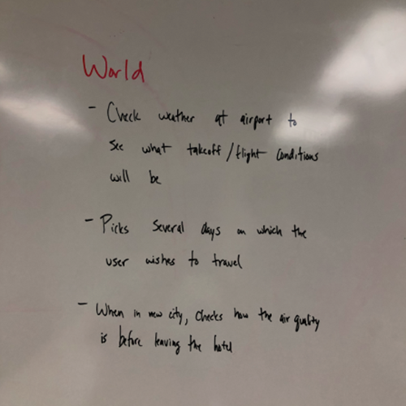

Weather App
Team Fab5
Yining Qiu, Wenyang Zheng, Brandon Morris, Zheran Wang, Tim Ruecker
Intro
In this project we improved the usability of weather apps.
At present, the app can search the weather of a certain location, view its weather details and add it to a
favorite list, which will allow the user to check the weather in the future.
In addition, the app adds a calendar and event function where users can choose a date and the corresponding
weather to create an event.
When the event is created, the app will notify everyone participating in the event by email.
This function allows users to flexibly set the event date according to the future weather conditions.
Problems with existing software: The current weather app in the app store does not have a similar calendar
and
event system. Therefore, users have to switch between the weather app and the notes app when creating an
event and the notes app cannot remind users when the weather changes in the future.
The work
Consolidated work models
Day in the life model

Physical model
Sequence model
Decision point model
Breakdowns and conclusion
...
The vision
Grand vision
Storyboards
Wireframes
The results
Conclusion
Many of the problems in our application are obscure functions and poor navigation. There is no external context, and several pages, including the calendar and tracking pages, do not have clear functions. Most of the problems in our application are related to the design of the application. Some of them do not conform to universal consistency and standards, while others do not give users the freedom to do what they want in the application. Most consistency and standards issues are not that important, but if the application goes beyond what users are used to, it may prevent users from using our application.
In addition, a common theme seen on most pages is that some numbers displayed on the screen are missing instructions or help / documentation. The color scheme of each page of the application is not uniform, and some "group" pages have the same theme, but are not consistent with some other pages. Another problem that exists is incorrect links and redirects from one page to another. The actual information in the navigation bar part of the application is not comprehensive enough, and some important page links are not placed in the navigation bar
Things to improve
Suggestions for redesign include tagging important information and more fully reflecting GTN when designing navigation between pages. For some pages, especially the "track" page, tutorials or documentation may be required. At least examples should be included to clarify how the function works under ideal circumstances. In addition, we should match the color of each page to unify the page style. One of the opinions given by users is that most recommendations for redesign had to do with common standards that can be found online or by browsing most applications.